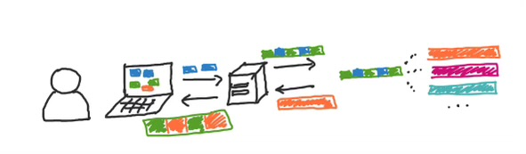

UCSD CSE190/291P SP26 Syllabus and Logistics
- Nadia Polikarpova (Instructor, CSE291P)
- Joe Gibbs Politz (Instructor, CSE190)
Generative AI and Programming introduces you to the broad field of programming with generative AI tools. Prompting AI agents to write code for you only scratches the surface! We are even more motivated by identifying new kinds of applications that would be difficult or impossible to write without generative AI as a fundamental component. We want to bring our software engineering sensibilities to bear on building useful applications atop existing AI tools.
Basics
- Lecture:
- Tue/Thu 9:30am, WLH2005
- both 190 and 291P students attend the same lectures!
- Professor and staff office hours: See the calendar below
- Q&A forum: Piazza
- GitHub Classroom (accept assignments here)
- Course GitHub Org
Schedule
| Date | Topic | Released | Due |
|---|---|---|---|
| 3/31 | Introduction + Semantic Text Processing | A1: Social Media Monitor | |
| 4/2 | Semantic Text Processing (cont.) | ||
| 4/7 | Semantic Text Processing (cont.) | A1 initial submission | |
| 4/9 | A1 Review Day | A1 reviews (Fri 4/11) | |
| 4/14 | A2 | A1 final submission (Wed 4/15) | |
| 4/16 | |||
| 4/21 | A2 initial submission | ||
| 4/23 | A2 Review Day | A2 reviews (Fri 4/25) | |
| 4/28 | A2 final submission (Wed 4/29) | ||
| 4/30 | |||
| 5/5 | |||
| 5/7 | |||
| 5/12 | |||
| 5/14 | |||
| 5/19 | |||
| 5/21 | |||
| 5/26 | |||
| 5/28 | |||
| 6/2 | |||
| 6/4 |
Course Components
There are two main parts of the course that have a grade: Assignments and Peer Review and Feedback.
Assignments and Reviews
The course has several assignments that involve programming and writing.
Each assignment will have three deadlines – an initial deadline, a deadline for reviews, and a post-review deadline. Specific assignments will have different rules for working individually or in groups.
At the initial deadline, your goal is to produce a working implementation of the project description that you can demo, and others can try and give feedback on. The course staff will give some limited feedback during this period, and assign a tentative score from 0-4.
Your work will then be shared, presented, or demoed (depending on the specific week), other groups will give feedback to you, and you will give feedback to other groups. This may include:
- Code feedback
- Bug reports
- Feature requests
Specific assignments will have precise rubrics for what to provide in reviews. The course staff may also provide feedback in this form.
Then, for the post-review deadline, you should respond to the feedback. Again, we will develop specific requirements for each one of the assignments, but required responses may include fixing some or all of the repored bugs, adding one or more of the requested features, and describing or updating code that people were confused about.
The course staff will combine the initial submission score and your response to the feedback into an overall 0-4 score for the assignment.
Reviews you Write
As described above, you will conduct reviews of other groups' work on a regular basis. These also form a part of your grade, and are expected to be thoughtful, thorough, and high-quality. We want them to represent your genuine human feedback on the programs you work with.
Some reviewing will happen in-person, and other reviewing will be asynchronous. For reviews you write on your own, we ask that you not use generative AI to generate your reviews. To motivate this, we will deduct substantial credit (give 0s) if we find obvious factual errors in reviews (AI hallucinated or otherwise).
Specific assignments will have specific instructions on review prompts, reflections, and feedback to give.
Reviewees (the students whose work is reviewed) will give a score for the usefulness and thoughtfulness of the feedback. The course staff will take this feedback-on-feedback into account when assigning a 0-4 reviewing score on each reviewing pass.
Missed or Late Work
A lot of work in this class involves interaction with other students. As a result, doing things on time affects others, not just you, and is an important point of professionalism. Missed work will be treated as follows:
Initial submissions are due on Tuesday and reviews happen on Thursdays.
- You can submit on Wednesday, but your assignment grade will be capped at 3/4 the first time, 2/4 the second time, and so on. We really don't want people to do this, because we make the review assignments on Wednesday and it complicates our process if submissions come in later.
- If you don't submit before the review, you can give reviews but not receive them, which is a logistical challenge for us (our course design intends for students to give and receive a specific number of reviews), and complicates other students' learning. The overall assignment grade is capped at 2/4 in this case.
Reviews are due Friday after a review day (Thursday). If you don't submit a review on time, you are complicating other students' learning.
- You can submit reviews over the weekend, with the review grade capped at 3/4 the first time, 2/4 the second time, and so on.
- If you don't submit a review by Sunday 11:59pm, the overall review grade is capped at 1/4.
Final submissions are due the Wednesday evening after the review.
Integrity and Late Work Interviews
The course staff may ask any student to meet for a synchronous, in-person interview during week 10 or finals week to discuss their submitted work. This is not a scheduled exam — it is at instructor discretion due to missing or late work, or to check on student understanding on a specific assignment. If you are asked, you should be prepared to explain your code, your design decisions, and how you responded to feedback. The purposes are:
- For some one-off situations of late work, it may be possible to recover credit for missed work.
- In some cases we want to verify that individual students understand the contributions of the whole group, and a 1-on-1 interview is the best way to do that.
If a student
Grading
Each component of the course has a minimum achievement level to get an A, B, or C in the course. You must reach that achievement level in all of the categories to get an A, B, or C.
- A achievement:
- ≥85% of assignment points (e.g. likely 4 assignments at 4 points each, so 14/16 points)
- ≥85% of review and feedback points (e.g. likely 4 assignments at 4 points each, so 14/16 points)
- B achievement:
- ≥75% of assignment points
- ≥75% of review and feedback points
- C achievement:
- ≥60% of assignment points
- ≥60% of review and feedback points
Below C achievement (in any category) is an F/No Pass.
Requests to change this grading policy (for a specific student or class-wide) will be denied with a link to this syllabus section. Consider this: we may, as instructors, decide for academic reasons that the most accurate way of assigning letter grades in the class needs to change (and we tend to only make changes that improve letter grades relative to this starting policy). However, it would be inappropriate for us to do so in response to student requests: that could create an appearance that we give students the grades they ask for rather than the grades they earned.
Policies and Perspective
- Gen AI is encouraged (but how?). Maybe not encouraged for written communication, but encouraged when writing code?
- Late work just uses resubmission deadlines for assignments, late reviews can only get 1/2 credit
- No scheduled exams; integrity interviews at instructor discretion during finals week